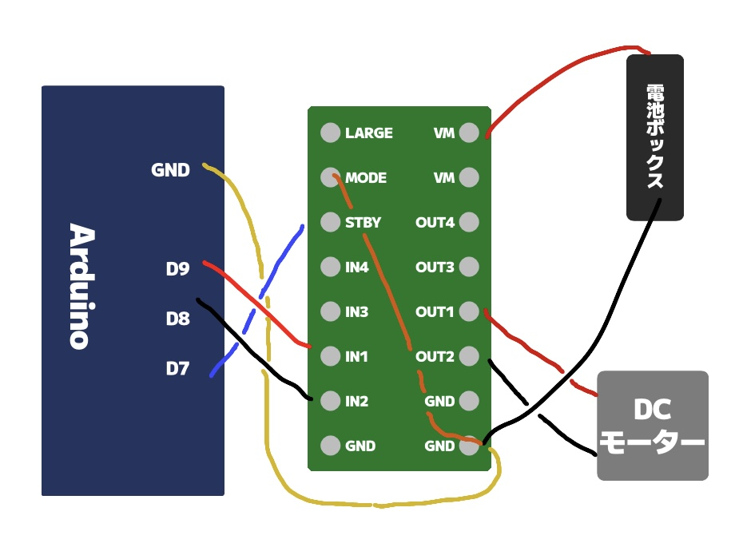

アイデアスケッチ

今回は①の競馬ゲームの制作にチャレンジします！
※変更の可能性はゼロではない。
概要
「あの熱狂を、手元に。」をコンセプトに、競馬愛を詰め込んだ作品にします。
※概要も随時変更を加えていく予定です。
※概要も随時変更を加えていく予定です。
プロセスメモ
■=考えないといけないことや疑問など ●=具体的にやること →=やったこと
■ IoTをどのように活用するか考える。
→ システムの開始にQRコードを使う（今のところ）
● dflinkを使ったQRコードのシステムを動作に組み込む。
■ ArduinoとPythonをうまく同時併用できるのか？
● Lチカで代用しながら↑のようなプログラムが動くか確かめる。
→
● モーターの動作が上手くいき次第あらためて同時に動かしてみる。
● 着順掲示板をPythonで再現する。
→

● プログラムをいじって動きを作る。
→ テキストごとに表示タイミングを変更して順番に表示されるようにした。
● なんか寂しいので効果音を導入する。
● 購入する部品をリストアップする。
→ DCモーター、DCモータードライバ、電池ボックスを買う！
→ 電池ボックスは単三１本のものから２本のものに交換！
■ 安全に動作する回路を組む。
→ 下の図の回路を組んだ！...ものの
 ● モーターが動作するよう回路を改善する。
→ 回路を組みなおしても動作しないので、モータードライバを
■ 作品のガワと内部機構の考えをまとめる。
● どのような構造で競走馬を動かすか考える
→ 歯車にカムを付ける形で上下させる（仮決定）
● 作品本体のサイズ感を決める。（他の作品がデカそうなのでちょっと大きめにしたい...）
● Fusionで競走馬を動かす機構を設計してテストする。